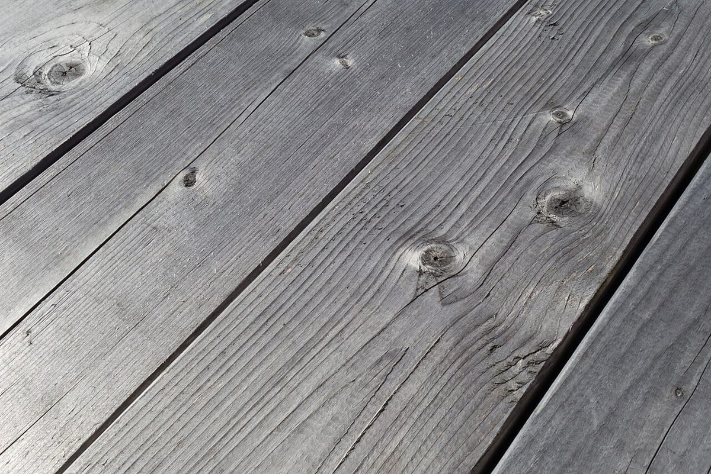
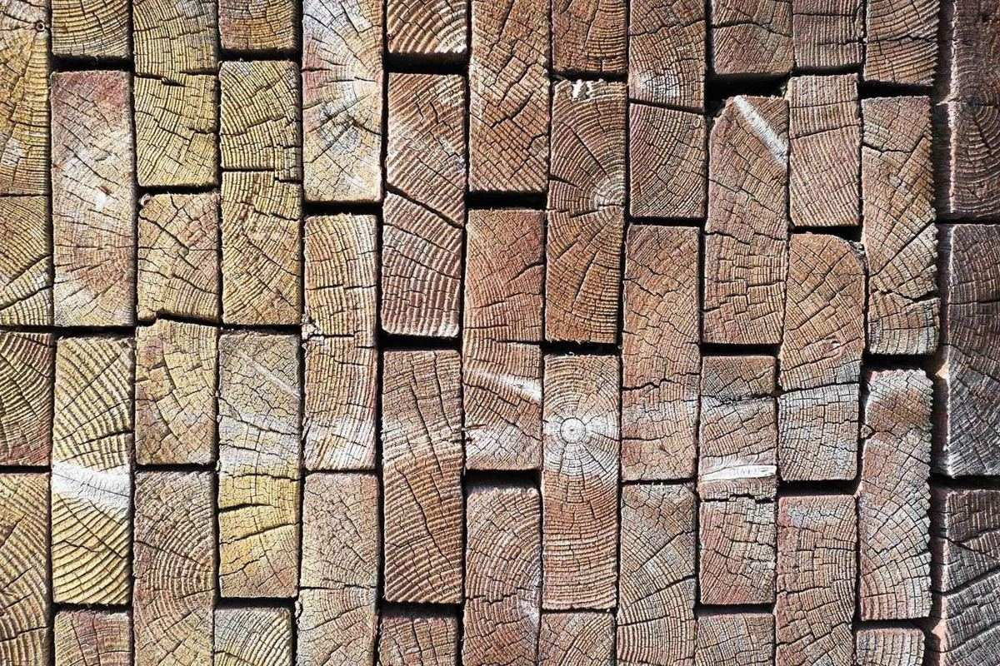
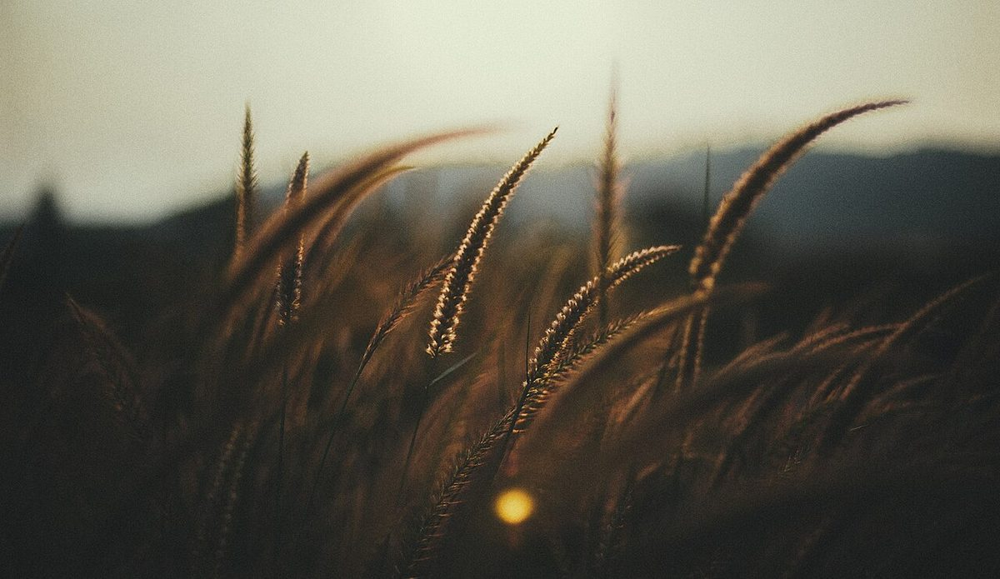

部位配置図
かんな盤の
部位図
麦わらぼうし
板が入って、削られて、出ていく。その通り道を六つの部位で描いた配置図です。

全体図
板が通り抜けるまで
自動かんな盤の側面の略図です。番号は下の部位一覧と対応しています。
部位一覧
六つの部位
- 1
送りローラー
板を一定の速さで刃のほうへ送り込む、入口側と出口側の一対の回転軸。
- 2
切削ヘッド
円筒に刃を取り付けた回転体。板の表面をいちどに削り、厚みをそろえる中心の部位。
- 3
定盤
板をのせて滑らせる平らな台。ここが平らだと、板も平らに通る。
- 4
集塵口
削りくずを吸い出して外へ送る出口。削った分がこもらないようにする。
- 5
昇降ハンドル
台の高さを回して決める部位。仕上げる厚みはここで決まる。
- 6
押さえ
刃のすぐ手前で板を押さえ、削りくずの割れ上がりを抑える小さな部品。
お店について
パンのお店です
所在地とInstagramのみ確認できています。営業時間・定休日・メニュー・価格・予約・駐車場は準備中です。



写真はイメージです。お店のものではありません。
写真帯(イメージ)


写真はフリー素材のイメージです。